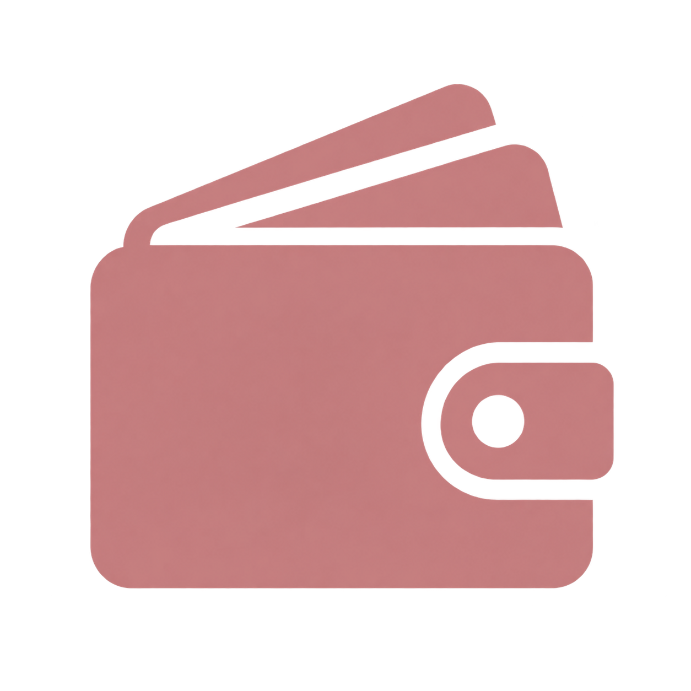
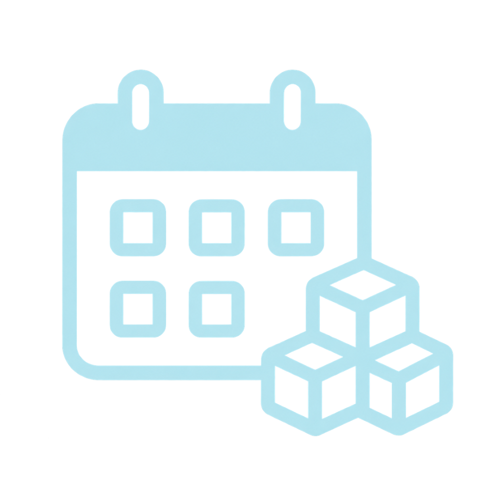
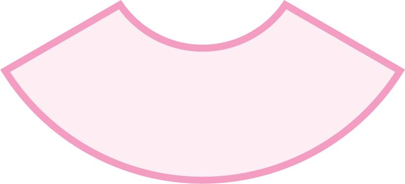
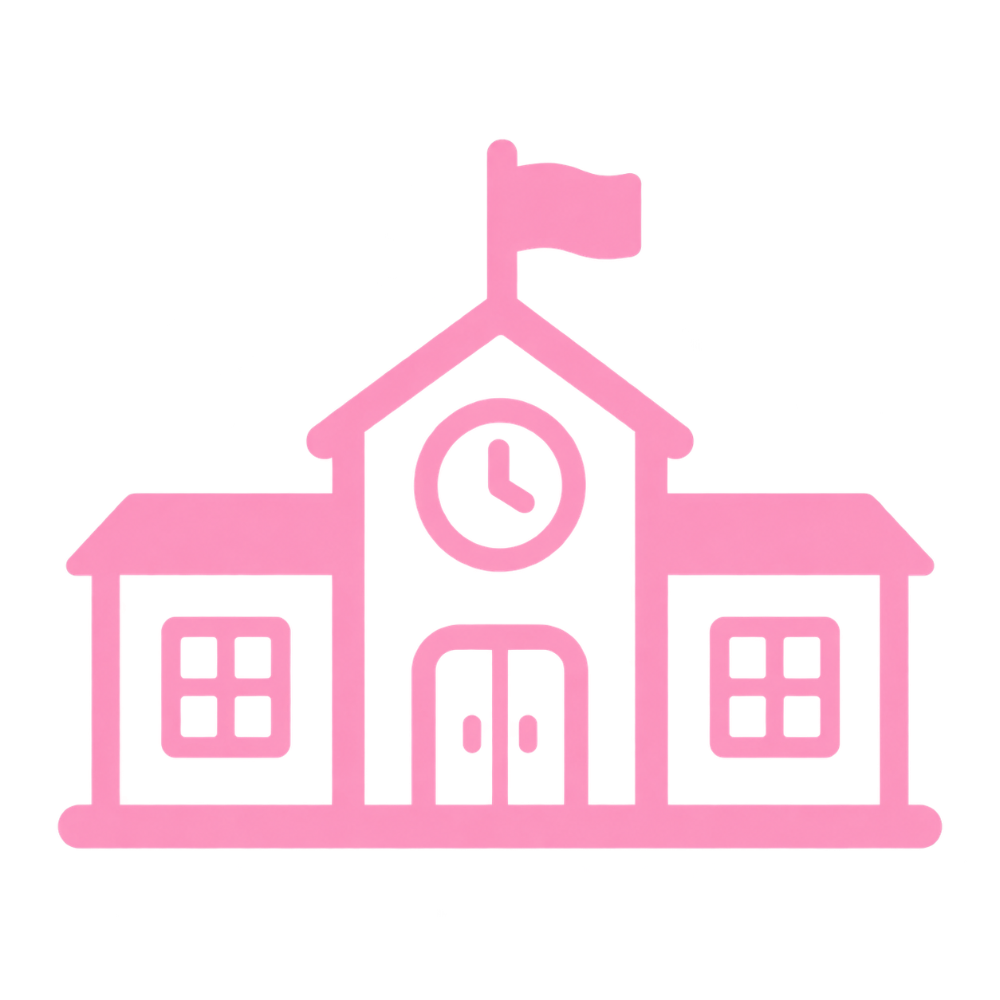

יחידה 6 תקציב ודיווח
מקורות ומבנה התקציב
היכרות עם רכיבי התקציב השונים מבטיחה תשתית ניהולית יציבה להפעלת החממות והסדנאות לאורך כל השנה. תקציב חממות וסדנאות אתחלתא נשען על שני מקורות תקציביים מרכזיים, שכל אחד מהם ממלא תפקיד אחר בהפעלת התוכנית:

משרד החינוך - האחראי על תקצוב רכיבי ההנחיה של החממה או הסדנה, וכן על רכיב ריכוז החממות והסדנאות. תקציב זה ניתן בדומה לתקצוב חממות וסדנאות אחרות הפועלות בשגרה במסגרת יחידות הכניסה להוראה במוסדות האקדמיים. לכן, מוסדות אקדמיים השותפים בתוכנית אתחלתא נדרשים להגיש את בקשות התקצוב עבור רכיבים אלה יחד עם הבקשות לתקצוב כלל החממות והסדנאות שהם מפעילים. הגשת הבקשות נעשית בהתאם לדרישות, לתנאים וללוחות הזמנים שמפרסם מדי שנה אגף כניסה להוראה וקשרי אקדמיה שדה.
תוכנית אתחלתא - הפועלת במכון מופ"ת בתמיכת קרן משפחת ליאון. התקציב אותו התוכנית מספקת הינו תקציב תוספתי, הניתן למוסדות האקדמיים במסגרת השותפות בתוכנית. התקציב מועבר ממכון מופ"ת אל המוסדות האקדמיים בהתאם להסכם שנחתם בין הצדדים מדי שנה, ובכפוף לעמידה בתנאים שנקבעו בו. תנאים אלה כוללים, בין היתר, את מבנה התקציב, רכיבי התקציב והסכומים שיועברו למוסד האקדמי במסגרת התוכנית.
עברו בלחיצה בין שלושת האבחנות המשפיעות על התקציב התוספתי.
 עברו בלחיצה בין שלושת האבחנות המשפיעות על התקציב התוספתי.
עברו בלחיצה בין שלושת האבחנות המשפיעות על התקציב התוספתי.
שלוש האבחנות נמצאות על גלגל התקציב. Tab, חץ למטה או שמאלה בוחרים את האבחנה הבאה ומציגים את המידע שלה. חץ למעלה או ימינה בוחרים את האבחנה הקודמת. Escape, כפתור הסגירה או לחיצה חוזרת על האבחנה סוגרים אותו.


הרכב החממהאו הסדנה


כמות החממותוהסדנאות


סוג המסגרת
מבנה התקציב
התוספתי